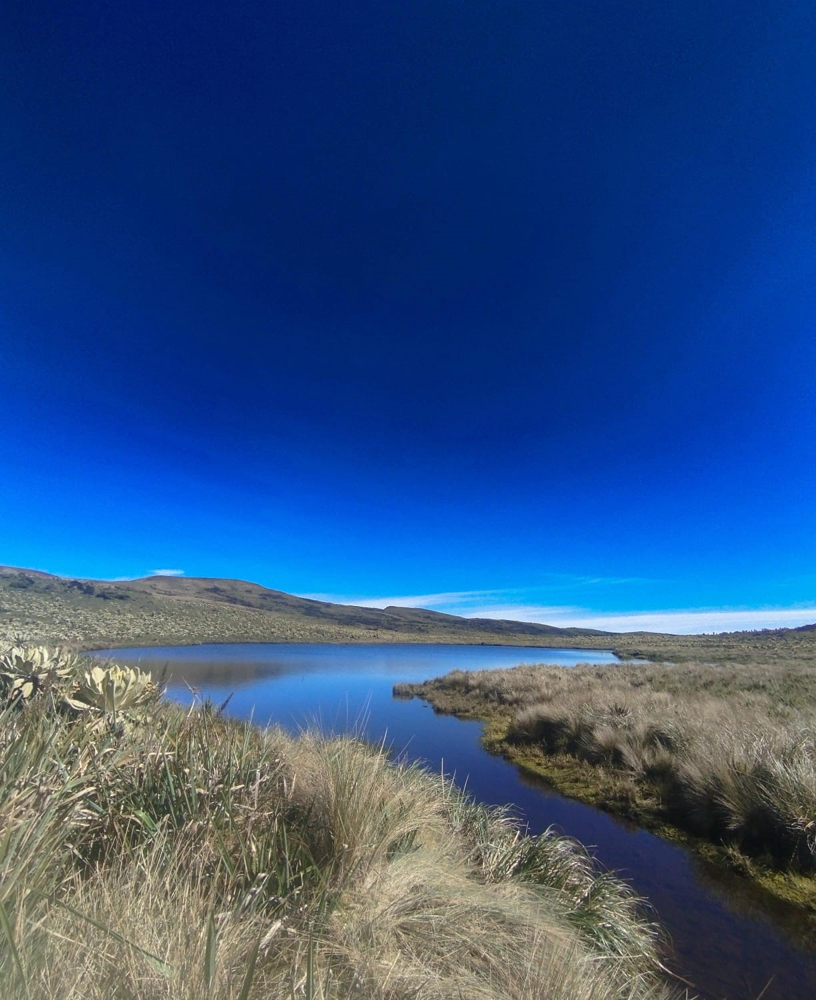

El Páramo o Volcán Bordoncillo se encuentra ubicado en el corregimiento Rosal del Monte, en el municipio de Buesaco, departamento de Nariño, al suroccidente de Colombia. Este territorio forma parte del sistema montañoso andino y constituye uno de los ecosistemas de alta montaña más representativos de la región. Su ubicación estratégica dentro de la cordillera de los Andes lo convierte en un espacio natural de gran importancia ecológica, paisajística e hídrica para las comunidades cercanas.
La zona del Bordoncillo se sitúa aproximadamente entre los 3.200 y los 3.600 metros sobre el nivel del mar (msnm), lo que corresponde al rango altitudinal típico de los ecosistemas de páramo andino. En estas elevaciones predominan condiciones climáticas particulares caracterizadas por bajas temperaturas, alta humedad, fuertes vientos y una elevada radiación solar durante el día, combinada con descensos térmicos significativos durante la noche. Las temperaturas promedio oscilan entre 4 °C y 12 °C, lo que genera un ambiente frío y húmedo que favorece el desarrollo de una biodiversidad especializada y altamente adaptada a estas condiciones extremas.
Desde el punto de vista geológico y geomorfológico, el Bordoncillo posee características asociadas a antiguos procesos volcánicos y a la dinámica natural de los ecosistemas de alta montaña. En su territorio se encuentran lagunas de origen natural, conocidas localmente como cochas, que se han formado a lo largo del tiempo por procesos de acumulación de agua, actividad volcánica pasada y dinámica glacial. Estas lagunas constituyen uno de los principales atractivos naturales del lugar y cumplen un papel fundamental en la conservación del agua dentro del ecosistema.
Otro aspecto relevante de este territorio es su valor paisajístico y ecoturístico. Desde diferentes puntos del recorrido es posible apreciar amplias panorámicas de montañas, lagunas, vegetación de páramo y formaciones naturales, lo que convierte al Bordoncillo en un lugar ideal para actividades de senderismo ecológico, observación de paisajes, educación ambiental y turismo de naturaleza. Estas actividades permiten a los visitantes comprender la importancia de los páramos en la conservación de los recursos naturales y en el equilibrio ambiental de las regiones andinas.

Antes de iniciar el recorrido hacia el Páramo o Volcán Bordoncillo, se establecerán dos puntos estratégicos de encuentro para organizar a los participantes, verificar condiciones básicas y brindar recomendaciones preventivas que permitan realizar la caminata de forma segura. El punto oficial de inicio será la vivienda de uno de los guías locales, donde se ofrecerá una breve explicación sobre las características del trayecto, la altitud, las condiciones climáticas del páramo, el tiempo estimado de la caminata y las normas ambientales que deben respetarse durante la actividad.
En términos logísticos, el lugar cuenta con espacio de estacionamiento para dos automóviles y cinco motocicletas. Los vehículos de mayor altura podrán continuar hasta la vivienda del segundo guía para facilitar el acceso y optimizar la organización del recorrido. Durante la caminata también se han definido puntos estratégicos de descanso y fotografía, seleccionados cuidadosamente para proteger el ecosistema del páramo y permitir que los visitantes disfruten del paisaje de manera segura y responsable.
Durante el recorrido se establecerán puntos de descanso y fotografía previamente seleccionados para evitar afectaciones ambientales.
Incluye una cuota adicional que cubre alimentación uniforme para todos los participantes, promoviendo integración grupal y mejor logística.
Cada visitante puede llevar bebidas adicionales, entregando residuos a los guías para manejo responsable.
El participante lleva sus propios alimentos sin costo adicional.
Debe responsabilizarse completamente por sus residuos, respetando el principio de no dejar rastro.
El recorrido guiado hacia el páramo y volcán del Bordoncillo tiene un costo de $40.000 COP por persona. Este valor incluye la experiencia completa de senderismo interpretativo por el ecosistema de páramo, acompañamiento durante el recorrido y la oportunidad de conocer uno de los paisajes naturales más representativos del municipio de Buesaco, Nariño.
Durante el trayecto los participantes podrán apreciar lagunas de origen volcánico, vegetación típica de alta montaña como los frailejones, además de disfrutar de vistas panorámicas únicas del entorno natural.
Para quienes deseen extender la experiencia, existe la posibilidad de continuar el recorrido hasta la última laguna del sistema conocida como "La Cocha de Moras".
Este trayecto adicional tiene un costo de $10.000 COP por persona, debido a que implica una caminata más extensa y un mayor tiempo de recorrido dentro del páramo.
Este destino es especialmente recomendado para quienes desean vivir una experiencia más completa dentro del ecosistema, ya que permite explorar zonas menos transitadas y contemplar uno de los paisajes más hermosos y conservados del Bordoncillo.